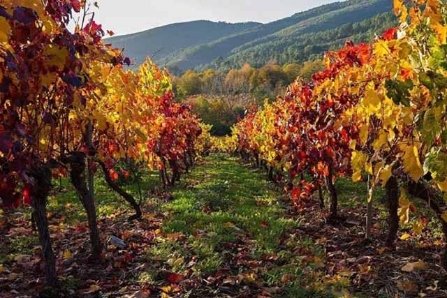
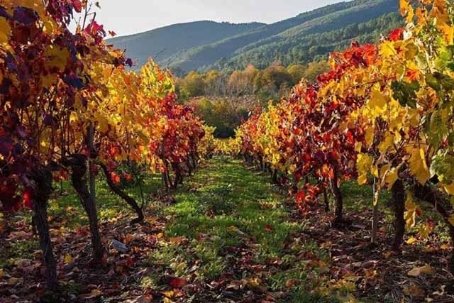

Foodex JAPÓN 2024
08/03/2024
La feria FOODEX, llevada a cabo anualmente en el centro internacional de conferencias Makuhari Messe en la ciudad de Chiba (aledaña a Tokio), es la mayor feria agroalimentaria que se celebra en la zona Asia-Pacífico, incluyendo Oceanía.
Ver evento